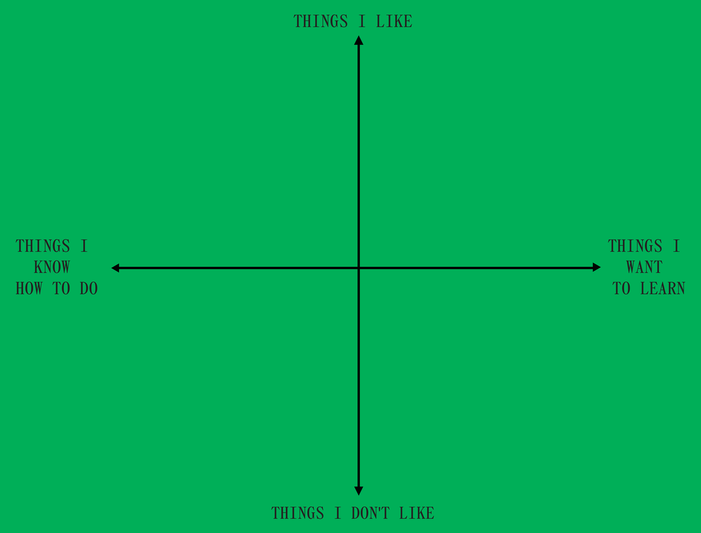

⬥ handwritten notes
⬥ consuming an excessive amount of alliums
⬥ mapping & indexing
⬥ footnotes and notations as a shifting landscape
⬥ working with the extremities of scale
⬥ great introductions
⬥ sending & receiving pdfs as a love language
⬥ printed matter
⬥ coming back to an
abandoned idea and
turning it anew
abandoned idea and
turning it anew
⬥ observing the tenderness & intimacy of hand gestures
⬥ archiving
⬥ curiosity as a practice
⬥ embracing deviations
⬥ downloading things into my local storage
⬥ softness as a radical act
⬥ building new environments
⬥ cooking as an act of love
⬥ an oceanic feeling
⬥ speaking in new forms
⬥ curating an experience
⬥ expanding archival systems
⬥ speaking from the heart
⬥ a beginner's mind
⬥ becoming a researcher
⬥ trusting a gut feeling
⬥ "ugly" design
⬥ spiritual fulfillment
⬥ community-building
⬥ reimagining futures
⬥ care as a circle, expanding
⬥ teaching
⬥ finding a new thing to think about to death
⬥ ...branding...
⬥ abandoned ideas
⬥ indecisiveness
⬥ what-ifs
⬥ motion graphics
⬥ being chronically online
⬥ overexplaining
⬥ coding websites with high proficiency
⬥ typesetting
⬥ making better motion graphics
⬥ getting unstuck
⬥ uncertainty
⬥ definitions as a limitation